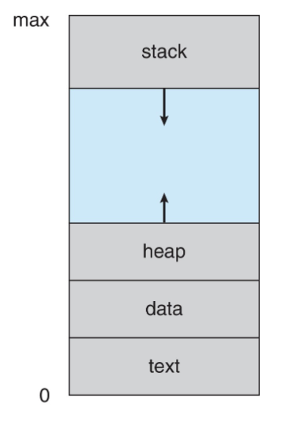
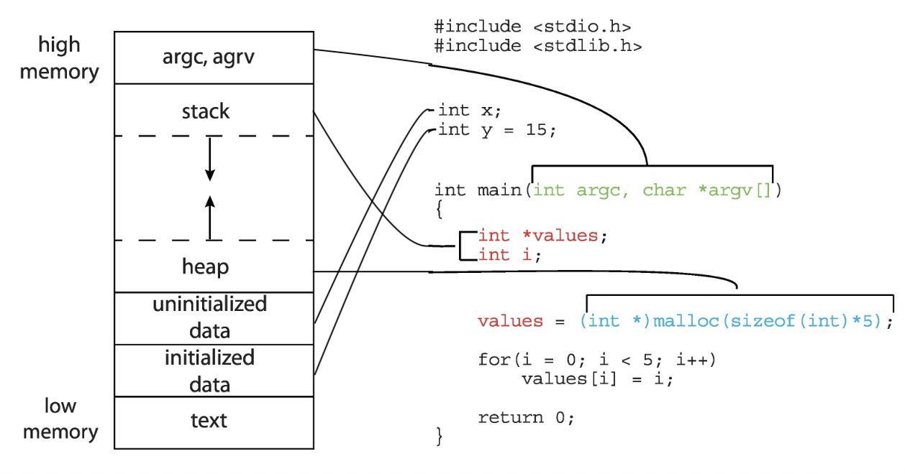
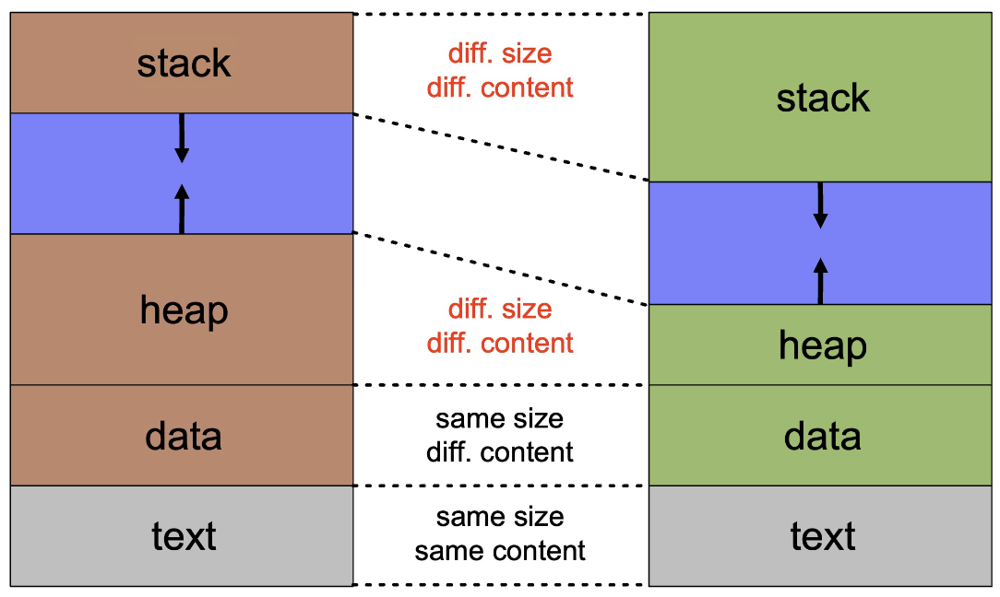
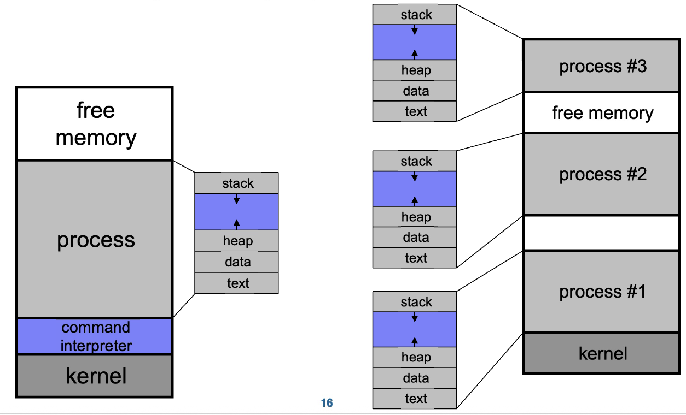
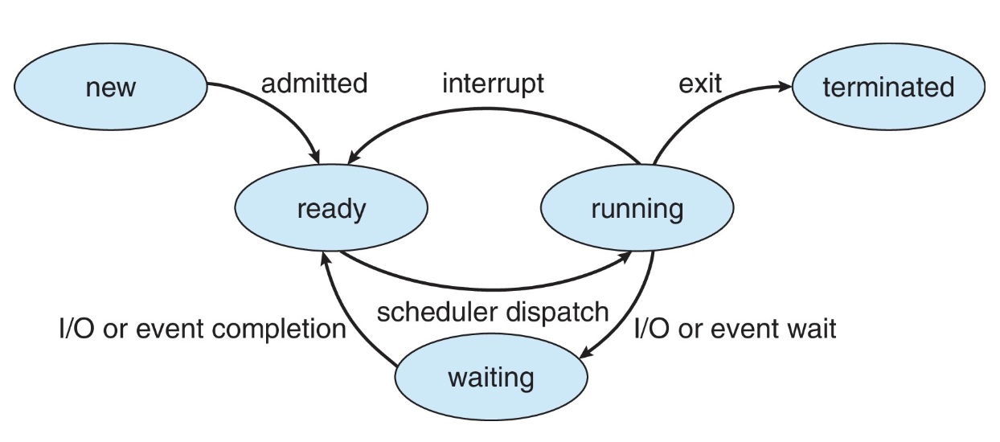
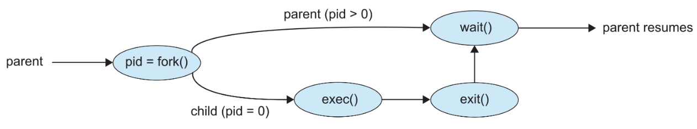

进程
概念¶
- 进程
- 进行资源分配和保护的单位
- 是执行中的程序（程序是被动实体，当被加载到内存中时成为一个进程）
- 组成
- 代码（文本段）：最初存储在磁盘上的可执行文件中
- 数据段：全局变量（
x86:.data+.bss） - 程序计数器：指向要执行的下一条指令
- 处理器寄存器的内容
- 堆：用于动态分配的内存（
malloc、new...） - 栈
- 内存空间

C语言程序的内存布局

- 栈
- 运行时栈（runtime stack）：可以进行压栈和出栈操作的栈
-
活动记录/栈帧：栈中的项，包含函数/方法调用和返回所需的所有“簿记”信息
栈帧内容
- 函数运行所需的“状态”：
- 调用者传递给它的参数
- 局部变量
- 返回地址：函数返回后应执行的下一条指令的地址
- 返回值
- 在调用函数前，调用者需要保存其寄存器的状态
-
栈用于管理程序中连续的函数/方法调用，栈向下增长
- 栈的管理完全由编译器负责
同一程序的两个进程

多任务

进程控制块 PCB¶
- 定义：与每个进程关联的信息，又被称为任务控制块
Tip
- 每个进程有且仅有一个PCB（在新进程创建时分配一个PCB，在进程终止时释放PCB）
Linux进程表示：task_struct结构体，其中包含了进程的所有信息
- 包含信息
- 进程状态：运行、等待等
- 程序计数器：下一条要执行指令的位置
- CPU 寄存器：所有进程中心寄存器的内容
- CPU 调度信息：优先级、调度队列指针
- 内存管理信息：分配给进程的内存
- 记账信息：使用的 CPU 时间、自启动以来经过的时钟时间、时间限制
- I/O 状态信息：分配给进程的 I/O 设备、打开文件列表
进程状态¶
- 状态类型
- 新建 New：进程正在被创建
- 运行 Running：指令正在被执行
- 等待 Waiting：进程正在等待某些事件发生
- 就绪 Ready：进程等待被分配给处理器
- 终止 Terminated：进程已完成执行
- 状态转换

进程创建¶
- 一个进程（父进程）可以创建一个新的进程（子进程），得到的树为进程树
- 每个进程有一个进程标识码
pid（ppid指父进程的pid）
子进程与父进程
- 父进程可以向子进程传递输入
- 创建子进程后，父进程可以继续执行，或者等待子进程完成
- 子进程可以是父进程的克隆（即拥有地址空间的副本），或者一个全新的程序
- 子进程可以继承/共享父进程的某些资源，或者拥有全新的资源
fork()系统调用（Linux/UNIX）
- 作用：创建一个新进程
- 返回值：向父进程返回子进程的
pid，向子进程返回0
Note
可以使用 getpid() 和 getppid() 获取当前进程的pid和ppid
示例代码
- 创建一个子进程
| C | |
|---|---|
Output:
- 内存关系
| C | |
|---|---|
Output: a = 12
hello的个数
Output: 六个hello
- 进程的个数
Pros and Cons
- Pros
- 简洁：
Windows CreateProcess需要提供10个参数，fork不需要参数 - 分工：
fork搭建骨架，exec赋予灵魂 - 联系：保持进程与进程之间的关系
- Cons
- 复杂：需要两个系统调用
- 性能差
- 安全性问题
Clone系统调用：fork+exec
exec*()系列系统调用（Linux/UNIX）
| C | |
|---|---|

- 作用：在
fork()之后调用，用新程序替换进程的内存空间 - C语言函数：有
execl、execle、execlp、execv、execve、execvp，是execve系统调用的用户空间包装器 - 参数：指定可执行文件的路径、命令行参数、环境变量
- 返回：如果
exec()调用成功，不会返回（因为原程序已被替换）；只有出错时才会返回
exec 函数族
函数的名字字母揭示了区别
l：参数以列表形式传递v：参数以向量/数组形式传递p：可以使用程序名而非完整路径e：可以传递一个自定义的环境变量数组给新程序
进程创建的流程
fork()系统调用创建新进程exec()用新程序替换进程的内存空间- 父进程调用
wait()等待子进程终止
进程终止¶
exit()
- 使用该系统调用，进程可以自行终止
- 此调用接受一个整数作为参数，称为进程的退出/返回/错误代码
- 操作系统会回收进程的所有资源（物理和虚拟内存、打开文件、I/O缓冲区等）
- 一个进程可以通过信号和
kill()系统调用终止另一个进程
wait()&waitpid()
wait()- 阻塞父进程，直到任意子进程结束
- 返回已终止子进程的
pid和退出代码
waitpid()- 阻塞直到一个特定的子进程结束
- 可以使用
WNOHANG选项使其成为非阻塞调用
- 信号
- 信号：软件中断，是进程必须处理的异步事件
- 用途：进程同步、通信等
- 产生原因：
- 在命令行按
^C向正在运行的命令发送SIGINT信号 - 段错误发送
SIGSEGV信号 - 进程使用
kill()发送SIGKILL信号给另一个进程
- 在命令行按
- 使用
kill -l命令可以列出所有信号 - 每个信号在进程中引起默认行为 e.g.
SIGINT信号导致进程终止 - 信号处理
- 大多数信号可以被忽略或由用户提供的处理函数捕获
SIGKILL和SIGSTOP不能被忽略或捕获（出于安全考虑）
signal() 系统调用
示例代码
| C | |
|---|---|
Output:
- 僵尸进程
Zombie
- 定义：子进程终止后，在未被父进程“收割”前，处于一种“未死”的僵尸状态
- 存在原因：父进程可能还需要调用
wait()或者其变体来获取子进程的退出代码
Tips
- 哪些资源不能由子进程释放？PCB
- 僵尸进程不是真正的活动进程，不消耗CPU资源
- 但它消耗一个内存槽位：如果僵尸进程过多，可能会耗尽系统资源，导致
fork()失败
- 查看进程信息：
ps xao pid,ppid,comm,state | grep a.out
如何避免僵尸进程
- 僵尸进程会一直存在，直到其父进程调用
wait()，或者其父进程死亡 - 处理方法：使用
SIGCHLD信号处理程序
- 当子进程退出时，会向父进程发送
SIGCHLD信号 - 父进程可以为
SIGCHLD安装一个处理程序，在该处理程序中调用wait()来回收子进程
- 孤儿进程
Orphan
- 定义：父进程已死亡的进程
- 在这种情况下，孤儿被
pid为1的进程“收养”（Linux的init、systemd/MacOSX的launchd） - 被
init收养的孤儿进程终止时，init会调用wait()回收它，因此孤儿进程不会变成僵尸 - 技巧：创建一个完全独立于父进程的进程
- 创建“孙子”进程
- 立即终止其父进程（子进程）